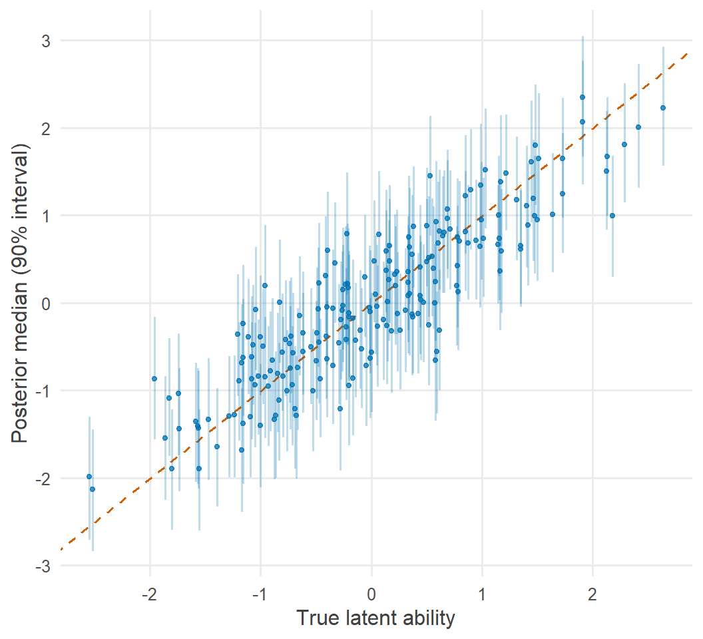
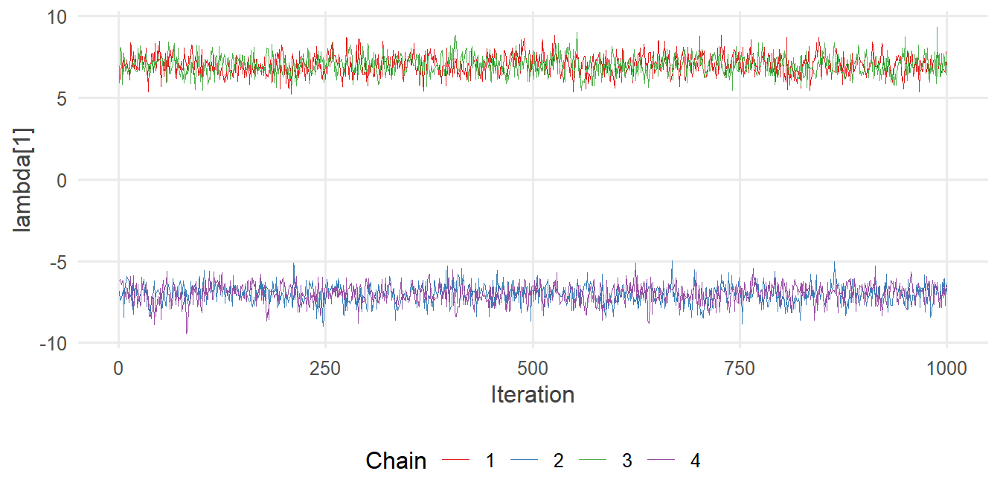

library(tidyverse)
library(cmdstanr)
library(posterior)
library(tidybayes)
source("R/theme.R")
source("R/utils.R")第 13 章 连续潜变量
看不见的量怎样写进模型？为什么潜变量可以像参数一样声明？识别问题从哪里来，怎样用约束和先验解决？
研究者关心的很多量是看不见的：阅读能力、焦虑水平、学习动机。我们能观测到的，只是这些量在测验、问卷或行为上留下的痕迹。
在 Stan 中，看不见的量有一个非常朴素的处理方式：把它当作参数。每个人的潜在能力，就是一个需要从数据中推断的未知量，和回归系数没有本质区别。本章用一个单因子模型说明这一点，并讨论潜变量模型绕不开的问题：识别。
1 本章要回答的问题
- 看不见的量怎样写进模型？
- 为什么潜变量可以像参数一样声明？
- 识别问题从哪里来？怎样用约束或先验解决？
2 公式卡片
单因子模型
\[ \begin{aligned} y_{jk} &\sim \operatorname{Normal}(\nu_k + \lambda_k\, \eta_j,\ \sigma_k), \qquad j = 1, \dots, J;\ k = 1, \dots, K \\ \eta_j &\sim \operatorname{Normal}(0,\ 1) \\[4pt] \nu_k &\sim \operatorname{Normal}(50,\ 20), \quad \lambda_k \sim \operatorname{Normal}^{+}(0,\ 10), \quad \sigma_k \sim \operatorname{Exponential}(0.1) \end{aligned} \]
| 符号 | 含义 | 已知 / 未知 | 数量 |
|---|---|---|---|
| \(y_{jk}\) | 学生 \(j\) 在分测验 \(k\) 上的得分 | 已知 | \(J \times K\) |
| \(\eta_j\) | 学生 \(j\) 的潜在阅读能力 | 未知 | \(J\) |
| \(\nu_k\) | 分测验 \(k\) 的截距（能力为平均水平时的期望得分） | 未知 | \(K\) |
| \(\lambda_k\) | 分测验 \(k\) 的载荷（能力每增加 1 个标准差，得分增加多少） | 未知 | \(K\) |
| \(\sigma_k\) | 分测验 \(k\) 的残差标准差（与能力无关的测量误差） | 未知 | \(K\) |
按照第 5 章的“身份登记”原则，\(\eta_j\) 是未知的，所以它属于 parameters 块。潜变量就是一组参数，只是数量随样本量增长。
3 模拟数据
研究情境：200 名学生完成一套阅读测验，包含 4 个分测验（词汇、句子理解、段落理解、推理）。我们假设 4 个分测验都反映同一种潜在的阅读能力。
set.seed(2026)
J <- 200
K <- 4
nu_true <- c(50, 60, 55, 45) # subtest intercepts
lambda_true <- c(7, 6, 8, 5) # loadings
sigma_true <- c(6, 6, 6, 7) # residual SDs
eta_true <- rnorm(J) # latent reading ability
y <- sapply(1:K, \(k) nu_true[k] + lambda_true[k] * eta_true + rnorm(J, 0, sigma_true[k]))
colnames(y) <- c("vocab", "sentence", "passage", "inference")
head(round(y, 1))#> vocab sentence passage inference
#> [1,] 51.1 71.1 64.9 36.4
#> [2,] 45.2 56.8 45.3 36.1
#> [3,] 49.6 54.5 56.1 37.3
#> [4,] 38.3 58.4 57.4 37.1
#> [5,] 43.6 50.5 46.9 46.9
#> [6,] 43.0 32.9 33.6 29.4round(cor(y), 2)#> vocab sentence passage inference
#> vocab 1.00 0.50 0.63 0.51
#> sentence 0.50 1.00 0.52 0.42
#> passage 0.63 0.52 1.00 0.55
#> inference 0.51 0.42 0.55 1.004 个分测验两两正相关，这正是共同潜变量留下的痕迹。
4 Stan 代码
// Chapter 13: One-factor model with a continuous latent variable
//
// y_jk ~ Normal(nu_k + lambda_k * eta_j, sigma_k)
// eta_j ~ Normal(0, 1) fixes the location and scale of eta
// lambda_k > 0 fixes the sign of eta
data {
int<lower=1> J; // number of students
int<lower=1> K; // number of subtests
matrix[J, K] y; // subtest scores
}
parameters {
vector[K] nu; // intercept of each subtest
vector<lower=0>[K] lambda; // loading of each subtest on eta
vector<lower=0>[K] sigma; // residual SD of each subtest
vector[J] eta; // latent ability of each student
}
model {
// Priors
target += normal_lpdf(nu | 50, 20);
target += normal_lpdf(lambda | 0, 10);
target += exponential_lpdf(sigma | 0.1);
// Latent variable: declared like a parameter, given a standard normal prior
target += std_normal_lpdf(eta);
// Likelihood: one column per subtest
for (k in 1:K) {
target += normal_lpdf(y[, k] | nu[k] + lambda[k] * eta, sigma[k]);
}
}
generated quantities {
// McDonald's omega: share of total-score variance due to eta
real omega = square(sum(lambda)) / (square(sum(lambda)) + sum(square(sigma)));
}几个要点：
vector[J] eta;与vector[K] nu;写在同一个parameters块里，在 Stan 看来二者没有任何区别。std_normal_lpdf(eta)给每个学生的能力一个标准正态先验。它固定了潜变量的位置（均值为 0）和尺度（标准差为 1）。lambda声明为<lower=0>。这一行看似平常，却是整个模型能够识别的关键，原因见下文。- 数据是一个 \(J \times K\) 矩阵，
y[, k]取出第 \(k\) 列，即所有学生在分测验 \(k\) 上的得分。循环只遍历 \(K = 4\) 个分测验，每一步都是对 \(J\) 个学生的向量化计算。 generated quantities中计算的 \(\omega\) 是总分的信度，后面会解释。
5 R 端运行
mod_factor <- cmdstan_model("stan/ch13_factor.stan")
fit_factor <- mod_factor$sample(
data = list(J = J, K = K, y = y),
seed = 2026, chains = 4, parallel_chains = 4, refresh = 0
)#> Running MCMC with 4 parallel chains...#> Chain 2 finished in 0.6 seconds.
#> Chain 3 finished in 0.9 seconds.
#> Chain 4 finished in 0.8 seconds.
#> Chain 1 finished in 1.1 seconds.
#>
#> All 4 chains finished successfully.
#> Mean chain execution time: 0.9 seconds.
#> Total execution time: 1.3 seconds.fit_factor$diagnostic_summary()#> $num_divergent
#> [1] 0 0 0 0
#>
#> $num_max_treedepth
#> [1] 0 0 0 0
#>
#> $ebfmi
#> [1] 0.5362223 0.6246203 0.6052417 0.5516433这个模型有 \(3K + J = 212\) 个参数，其中 200 个是潜变量。Stan 处理它们毫无困难。
6 后验整理与可视化
6.1 测量模型的参数
truth <- tibble(
variable = c(paste0("lambda[", 1:K, "]"), paste0("sigma[", 1:K, "]")),
true = c(lambda_true, sigma_true)
)
fit_factor$summary(c("lambda", "sigma"), "mean", ~ quantile(.x, c(0.05, 0.95)), "rhat") |>
left_join(truth, by = "variable") |>
knitr::kable(digits = 2)| variable | mean | 5% | 95% | rhat | true |
|---|---|---|---|---|---|
| lambda[1] | 7.02 | 6.04 | 8.03 | 1 | 7 |
| lambda[2] | 5.39 | 4.45 | 6.36 | 1 | 6 |
| lambda[3] | 7.69 | 6.68 | 8.73 | 1 | 8 |
| lambda[4] | 5.72 | 4.76 | 6.73 | 1 | 5 |
| sigma[1] | 5.85 | 5.12 | 6.59 | 1 | 6 |
| sigma[2] | 6.54 | 5.93 | 7.18 | 1 | 6 |
| sigma[3] | 5.33 | 4.48 | 6.13 | 1 | 6 |
| sigma[4] | 6.43 | 5.80 | 7.07 | 1 | 7 |
6.2 每个学生的能力
eta_post <- fit_factor |>
spread_draws(eta[j]) |>
median_qi(eta, .width = 0.9) |>
mutate(eta_true = eta_true[j])
ggplot(eta_post, aes(x = eta_true, y = eta)) +
geom_abline(intercept = 0, slope = 1, colour = f2s_colors[["truth"]], linetype = "dashed") +
geom_linerange(aes(ymin = .lower, ymax = .upper), colour = f2s_colors[["post"]], alpha = 0.25) +
geom_point(colour = f2s_colors[["post"]], size = 1) +
labs(x = "True latent ability", y = "Posterior median (90% interval)")
eta_post |>
summarise(
correlation_with_truth = cor(eta, eta_true),
coverage_90 = mean(eta_true >= .lower & eta_true <= .upper),
mean_interval_width = mean(.upper - .lower)
)#> # A tibble: 1 × 3
#> correlation_with_truth coverage_90 mean_interval_width
#> <dbl> <dbl> <dbl>
#> 1 0.887 0.87 1.37每个学生的能力都有一个完整的后验分布。区间宽度反映的是：只凭 4 个分测验，我们对一个人的能力能知道多准。
6.3 潜变量 vs. 总分
实践中常用 4 个分测验的总分来代表能力。它和潜变量估计有什么不同？
tibble(
method = c("Sum score", "Latent variable (posterior mean)"),
correlation = c(cor(rowSums(y), eta_true),
cor(fit_factor$summary("eta", "mean")$mean, eta_true))
)#> # A tibble: 2 × 2
#> method correlation
#> <chr> <dbl>
#> 1 Sum score 0.876
#> 2 Latent variable (posterior mean) 0.886两者与真实能力的相关都很高，潜变量估计略好一些，因为它按各分测验的“质量”（载荷与残差）加权，而总分对 4 个分测验一视同仁。更重要的区别在于：总分只是一个数，而潜变量估计带着每个人自己的不确定性，可以直接用于后续推断（比如练习 3）。
7 为什么这样写
7.1 为什么潜变量可以像参数一样声明？
在贝叶斯框架中，“参数”和“潜变量”没有本质区别：它们都是未知的量，都需要一个先验，都从数据中得到后验。区别只在于解释：参数通常描述总体（如载荷 \(\lambda_k\)），潜变量通常描述个体（如能力 \(\eta_j\)）。
这种统一带来一个很大的好处：潜变量的不确定性会自动传递到所有其他量上。载荷的后验已经考虑了每个人的能力都不确定；反过来，每个人能力的后验也考虑了载荷的不确定性。频率学派的结构方程模型通常先把潜变量积分掉，再单独估计因子得分；在 Stan 中，二者在同一次采样中一起完成。
注意 \(\eta_j \sim \operatorname{Normal}(0, 1)\) 这个写法本身就是第 12 章的非中心化形式：潜变量的先验是标准正态，尺度信息放在载荷 \(\lambda_k\) 里。
7.2 识别问题一：位置与尺度
看一下模型的均值部分：\(\nu_k + \lambda_k \eta_j\)。如果把所有 \(\eta_j\) 都加上 10，再把每个 \(\nu_k\) 都减去 \(10\lambda_k\)，模型的预测完全不变。同样，如果把所有 \(\eta_j\) 乘以 2，再把每个 \(\lambda_k\) 除以 2，预测也完全不变。
也就是说，数据无法告诉我们潜变量的原点和单位。这本来就合理：“阅读能力”没有天然的零点和刻度。解决办法是由我们来规定：\(\eta_j \sim \operatorname{Normal}(0, 1)\) 把原点定在总体均值，把单位定为总体标准差。
另一种常见的规定是固定第一个载荷 \(\lambda_1 = 1\)，让 \(\eta\) 的标准差自由估计，即“标记变量法”。两种规定得到的模型等价，只是潜变量的单位不同。
7.3 识别问题二：符号
即使固定了位置和尺度，还剩一种不确定性：把所有 \(\eta_j\) 和所有 \(\lambda_k\) 同时变号，预测仍然完全不变，因为 \((-\lambda_k)(-\eta_j) = \lambda_k\eta_j\)。数据无法区分“能力高的人得分高”和“能力低的人得分高、且载荷为负”。
去掉 lambda 的 <lower=0> 约束，看看会发生什么：
parameters {
vector[K] nu;
vector[K] lambda; // no <lower=0>: the sign is not identified
vector<lower=0>[K] sigma;
vector[J] eta;
}fit_unid <- cmdstan_model("stan/ch13_factor_unidentified.stan")$sample(
data = list(J = J, K = K, y = y),
seed = 2026, chains = 4, parallel_chains = 4, refresh = 0
)#> Running MCMC with 4 parallel chains...
#>
#> Chain 1 finished in 0.6 seconds.
#> Chain 2 finished in 0.6 seconds.
#> Chain 3 finished in 0.6 seconds.
#> Chain 4 finished in 0.7 seconds.
#>
#> All 4 chains finished successfully.
#> Mean chain execution time: 0.6 seconds.
#> Total execution time: 0.8 seconds.fit_unid$summary("lambda", "mean", "rhat", "ess_bulk")#> # A tibble: 4 × 4
#> variable mean rhat ess_bulk
#> <chr> <dbl> <dbl> <dbl>
#> 1 lambda[1] 0.0118 1.73 6.12
#> 2 lambda[2] -0.00952 1.73 6.12
#> 3 lambda[3] 0.00416 1.74 6.13
#> 4 lambda[4] -0.000857 1.74 6.11fit_unid$draws("lambda[1]") |>
apply(2, mean)#> 1 2 3 4
#> 7.038153 -7.021635 7.017938 -6.987209每条链各自收敛到了一个“镜像”：有的链中 \(\lambda_1 \approx +7\)，有的链中 \(\lambda_1 \approx -7\)。合在一起，Rhat 远大于 1.01，均值接近 0，完全没有意义。
fit_unid |>
spread_draws(lambda[k]) |>
filter(k == 1) |>
ggplot(aes(x = .iteration, y = lambda, colour = factor(.chain))) +
geom_line(linewidth = 0.3) +
scale_colour_brewer(palette = "Set1") +
labs(x = "Iteration", y = "lambda[1]", colour = "Chain")
这里的后验有两个完全对称的众数，每条链从随机初值出发，落入其中一个，之后就再也跨不过去。加上 <lower=0>，相当于宣布“所有分测验都与能力正相关”，排除了镜像，后验只剩一个众数。
这个约束在研究上是合理的：我们本来就是因为相信各分测验都在测量阅读能力，才把它们放在一起。如果某个条目在理论上应当负向载荷（比如反向计分的问卷条目），通常的做法是先反向计分，或者只约束一个“锚定”条目的载荷为正。
7.4 信度 \(\omega\) 是怎么来的？
总分 \(\sum_k y_{jk}\) 的方差可以分成两部分：来自潜变量的部分 \(\left(\sum_k \lambda_k\right)^2\)，以及来自测量误差的部分 \(\sum_k \sigma_k^2\)。前者所占的比例就是总分的信度：
\[ \omega = \frac{\left(\sum_k \lambda_k\right)^2}{\left(\sum_k \lambda_k\right)^2 + \sum_k \sigma_k^2} \]
fit_factor$summary("omega", "mean", ~ quantile(.x, c(0.05, 0.95)))#> # A tibble: 1 × 4
#> variable mean `5%` `95%`
#> <chr> <dbl> <dbl> <dbl>
#> 1 omega 0.818 0.781 0.851把 \(\omega\) 放在 generated quantities 里，它就自动拥有了完整的后验分布。这是贝叶斯潜变量模型的一个实用优点：信度这样的衍生指标不再只是一个点估计。
8 常见错误
| 错误写法 | 后果 | 正确写法 |
|---|---|---|
| 不给潜变量设置先验，或先验的位置和尺度都自由 | 位置和尺度不可识别，后验无法收敛 | eta ~ std_normal()，或固定一个载荷为 1 |
| 载荷不加符号约束 | 链落入镜像众数，Rhat 极大 | vector<lower=0>[K] lambda; |
| 把反向计分的条目直接放进模型 | 与正约束冲突，载荷被压到 0 附近 | 先反向计分，或只约束锚定条目 |
| 只报告潜变量的后验均值，丢掉不确定性 | 后续分析低估了不确定性 | 把潜变量的全部抽样带入后续分析 |
用 real eta;（标量）表示所有人的能力 |
模型变成所有人能力相同 | 每人一个：vector[J] eta; |
9 练习
练习 1 谁的能力估计最不确定？
找出能力后验 90% 区间最宽的 5 名学生。他们的能力位于分布的什么位置？区间宽度在学生之间差别大吗？为什么？
提示参考答案
eta_widths <- eta_post |>
mutate(width = .upper - .lower)
eta_widths |>
arrange(desc(width)) |>
slice_head(n = 5) |>
select(j, eta, .lower, .upper, width, eta_true)#> # A tibble: 5 × 6
#> j eta .lower .upper width eta_true
#> <int> <dbl> <dbl> <dbl> <dbl> <dbl>
#> 1 98 -0.342 -1.10 0.404 1.50 -0.490
#> 2 118 1.38 0.642 2.14 1.50 1.17
#> 3 82 1.65 0.939 2.39 1.46 1.51
#> 4 178 0.107 -0.604 0.845 1.45 0.346
#> 5 162 -1.28 -2.00 -0.555 1.45 -0.865eta_widths |>
summarise(min_width = min(width), median_width = median(width), max_width = max(width))#> # A tibble: 1 × 3
#> min_width median_width max_width
#> <dbl> <dbl> <dbl>
#> 1 1.30 1.37 1.50最宽的 5 名学生散布在能力分布的各处，并不集中在两端；所有学生的区间宽度都非常接近，彼此之间的差别主要来自蒙特卡罗误差。
原因可以从公式中看出：在线性正态的因子模型中，给定 \(\lambda\) 和 \(\sigma\)，每个学生能力的后验方差是
\[ \operatorname{Var}(\eta_j \mid y_j) = \left(1 + \sum_k \frac{\lambda_k^2}{\sigma_k^2}\right)^{-1} \]
它与学生的得分无关，对所有人都一样。每个人都做了同样的 4 个分测验，测得一样准。
在项目反应理论等非线性模型中，情况就不同了：如果题目难度集中在中等水平，中等能力的学生测得准，能力极高或极低的学生测不准，区间宽度会随能力明显变化。
练习 2 用标记变量法识别
改写模型：固定 \(\lambda_1 = 1\)，让 \(\eta_j \sim \operatorname{Normal}(0, \psi)\)，\(\psi\) 自由估计。写出需要修改的部分。
提示参考答案
parameters {
vector[K] nu;
vector<lower=0>[K - 1] lambda_free; // loadings of subtests 2..K
vector<lower=0>[K] sigma;
real<lower=0> psi; // SD of the latent variable
vector[J] eta_raw;
}
transformed parameters {
vector[K] lambda = append_row(1, lambda_free);
vector[J] eta = psi * eta_raw; // non-centered
}
model {
target += std_normal_lpdf(eta_raw);
target += exponential_lpdf(psi | 0.1);
...
}此时 \(\eta\) 的单位与第一个分测验相同：\(\eta\) 增加 1，词汇分测验的期望得分增加 1 分。两种识别方式下，\(\lambda_k \cdot \operatorname{sd}(\eta)\) 是相同的，模型等价。
练习 3 比较两名学生
学生 1 和学生 2 谁的阅读能力更强？给出后验概率。
提示参考答案
fit_factor |>
spread_draws(eta[j]) |>
filter(j %in% c(1, 2)) |>
pivot_wider(names_from = j, values_from = eta, names_prefix = "eta_") |>
summarise(prob_1_above_2 = mean(eta_1 > eta_2))#> # A tibble: 1 × 1
#> prob_1_above_2
#> <dbl>
#> 1 0.995如果只看总分，我们只能说“学生 1 的总分比学生 2 高（或低）”。潜变量的后验抽样直接给出了“能力更高”的概率，自然地考虑了两个人各自的测量误差。这在选拔、诊断等需要对个体做判断的场合尤其有用。
练习 4 潜变量作为预测变量
假设每名学生还有一个结果变量 \(z_j\)（比如期末语文成绩），研究者想知道阅读能力能否预测它。应该怎样在同一个 Stan 模型中实现？为什么比“先算因子得分，再做回归”更好？
提示参考答案
在 data 块中加入 vector[J] z;，在 parameters 块中加入回归参数 real a; real b; real<lower=0> s;，在 model 块中加一行：
target += normal_lpdf(z | a + b * eta, s);这样，测量模型和结构模型在同一个后验中联合估计。“先算因子得分再回归”把因子得分当作没有误差的已知数，会低估 \(b\) 的不确定性，并且由于测量误差的存在，\(b\) 的估计会被衰减（偏向 0）。联合模型把每个 \(\eta_j\) 的不确定性完整地传递给了 \(b\)。这正是结构方程模型的思想，在 Stan 中只需要多写一行。
10 小结
- 潜变量就是参数：每个个体一个，声明在
parameters块中，给一个先验，从数据中得到后验。 - 潜变量模型有位置、尺度和符号三种识别问题。\(\eta_j \sim \operatorname{Normal}(0, 1)\) 解决前两种，
lambda的<lower=0>解决第三种。 - 不识别的后验会表现为多个对称的众数，链之间无法混合，Rhat 很大。
- 潜变量的不确定性自动传递到载荷、信度以及任何下游分析中。
11 延伸
- 下一章：第 14 章 Stan 为什么不能有离散参数。如果潜变量不是连续的能力，而是离散的类别（比如“掌握”与“未掌握”），情况会怎样？
- 潜变量调节、中介以及与 lavaan、blavaan 的对照，在 Stan 模型库中有完整案例。
12 参考资料
- 结构方程模型与潜变量的经典教材 Bollen (1989)。
- Stan User’s Guide 的 Measurement Error and Meta-Analysis 一章讨论了把未观测的量作为参数的建模方式 (Stan Development Team, 2026)。
- 多峰后验与 Rhat 的关系见 Vehtari 等 (2021)。
- Statistical Rethinking 第 15 章讨论了测量误差与把未观测值当作参数的思想 (McElreath, 2020)。
Bollen, K. A. (1989). Structural Equations with Latent Variables. Wiley.
McElreath, R. (2020). Statistical Rethinking: A Bayesian Course with Examples in R and Stan (2 版). CRC Press.
Stan Development Team. (2026). Stan User’s Guide (Version 2.40). https://mc-stan.org/docs/stan-users-guide/
Vehtari, A., Gelman, A., Simpson, D., Carpenter, B., & Bürkner, P.-C. (2021). Rank-Normalization, Folding, and Localization: An Improved \(\widehat{R}\) for Assessing Convergence of MCMC (with Discussion). Bayesian Analysis, 16(2), 667～718. https://doi.org/10.1214/20-BA1221